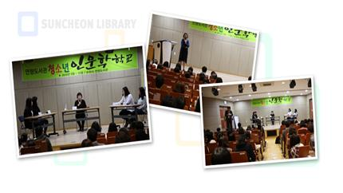

청소년 인문 학교
- 2021 / 매월 셋째주 토요일 15:00-17:00
- 대상 중고등학생 250명
- 장소 연향도서관 극장
- 내용 및 방법 매월 1 권의 책을 읽고 자체 토론 후 저자 초청 강연 및 토론
- 강사 청소년 도서 작가 9명

<책 읽는 아이, 토론하는 우리집> 의 저자 김성현 선생님의 독서 특강
"평생교육습관 독서, 내 아이와 함께"
- 대상 중고등학생 250명
- 장소 연향도서관 극장
- 내용 및 방법 매월 1 권의 책을 읽고 자체 토론 후 저자 초청 강연 및 토론
- 강사 청소년 도서 작가 9명